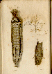

| Online Exhibits >> Bloodletting >> Leeches |
Leeches used in bloodletting
 "The medicinal Leech is common throughout the whole of Europe, but more so in the southern than in the northern parts. It is about three inches in length; but in the southern parts of America and India it is often found to be six or seven inches. Formerly this species was very abundant in our island; but from their present scarcity, owing to their being more in request among medical men, and to the rapid improvements which have of late years taken place in agriculture, particularly in the draining and cultivation of waste-lands, we are obliged to recive a supply form the Continent, chiefly from Bourdeaux and Lisbon. " "When the application of Leeches is judged expedient, the part on which it is intended they shall fix, should be as clean as possible: it should therefore be first washed with soap and water, and afterwards with water alone; which will be the more necessary, should any liniment or embrocation have been used." "Leeches are commonly affixed by inverting a wine-glass containing as many as may be required, upon the part affected. The great disadvantage of this practice is, that some of them frequently retire to the upper part of the glass and remain at rest, defying all attempts to dislodge them, without incurring the risk of removing those that may have fastened." "...Some little dexterity is requisite to make the Leech attach itself at the first point of contact, or it often happens that it will pass over a great extent of surface, without evincing the least disposition to bite. In this case, puncturing the part with a lancet offers the only chance of success." "The Leech, when filled, contains from half an ounce to an ounce of blood; ...When a Leech quits the part to which it was affixed, and the blood continues to flow longer than is required, the application of a slight compress will usually restrain it; but should this at any time prove ineffectual, we must have recourse to a compress steeped in some styptic, as brandy or spirits of wine." Find details about the life cycle, history, and medicinal uses of the leech at: http://biopharm-leeches.com |